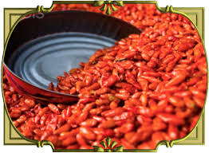
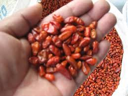

TIPOS DE CHILES Y SEMILLAS
Jael Cruz Cruz
Chiltepin
El chiltepín o chiltepe es un chile de la especie Capsicum annum utilizado en toda Latinoamérica, desde el norte de México hasta Sudamérica.
Es muy frecuentemente utilizado en los estados Baja California Sur, Sinaloa, Sonora, Chihuahua, Veracruz y en Cuetzalan, Puebla donde se utiliza para hacer salsas o como condimento. En México se disfruta en platillos como el menudo, el pozole o eltapixte en Veracruz, así como cualquier tipo de sopas. Su uso agrega un toque muy picoso a los platillos, sin hacerlos perder su sabor original.
El chiltepín generalmente se recolecta en estado silvestre cuando aún presenta una maduración incompleta, para posteriormente ponerse a secar, es común que en la zona rural forme parte del huerto familiar, junto con otras plantas de uso común.
Recolección del material vegetal
Las semillas de chiltepín fueron colectadas en el municipio de Moctezuma, Son., ubicado a 175 km al noroeste del estado de Hermosillo, que colinda al norte con Cumpas, al sur con Tepache y San Pedro de la cueva, al oeste con Baviacora y Cumpas, al este con Huasabas y Granados. Se colectó 1 kg de chile de forma manual, se realizó la selección de frutos que tuvieran un color rojo intenso y tamaño prominente. Posteriormente se secó a la sombra por un periodo de 2 semanas. Una vez transcurridas las dos semanas del secado, se abrió el fruto y se extrajeron las semillas, seleccionando aquellas que estuvieran en buen estado (color, tamaño y ausencia de necrosis).
Tratamiento de la semilla
Se colocaron semillas de chiltepín en un recipiente con agua, con el objetivo de eliminar semillas consideradas como vanas al permanecer flotando. Luego se sumergieron 2 000 semillas en una solución de ácido giberélico (400 ppm) durante 20 h, posteriormente con un colador se extrajeron las semillas y se colocaron a la sombra en papel estraza (Martínez, 2003).
Tratamiento del sustrato
En un recipiente con agua se agregó 7 kg de Vermiculita y se colocó al fuego. Una vez alcanzada la temperatura de ebullición se dejó hervir por 30 minutos, luego se eliminó el agua del sustrato y se dejo enfriar. Posteriormente, se llenaron 4 charolas con el sustrato previamente esterilizado, cada una con capacidad de 500 plantas (Samperio, 1999).
Siembra
En cada orificio de la charola se colocó una semilla previamente tratada a una profundidad de 0,5 cm y se roció agua. Posteriormente se colocaron las charolas bajo sombra a una temperatura de 35 °C y un período de 10 h luz y 14 h de oscuridad.
El riego se realizó cada 3 días durante las 3 primeras semanas, luego una vez a la semana.
Jael Cruz Cruz